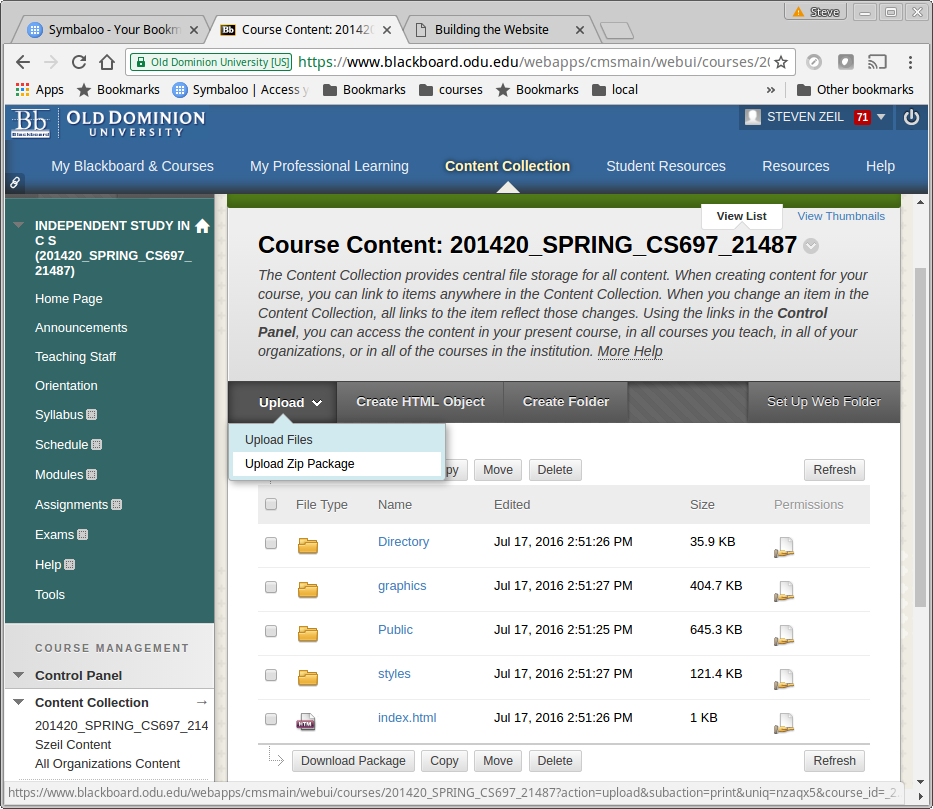
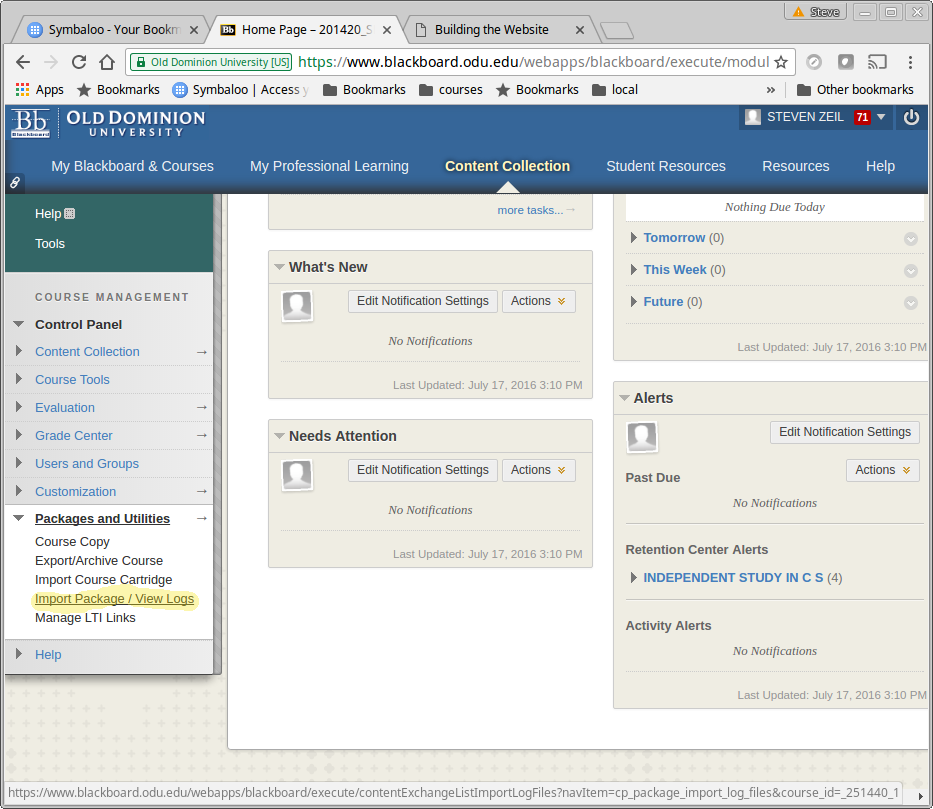
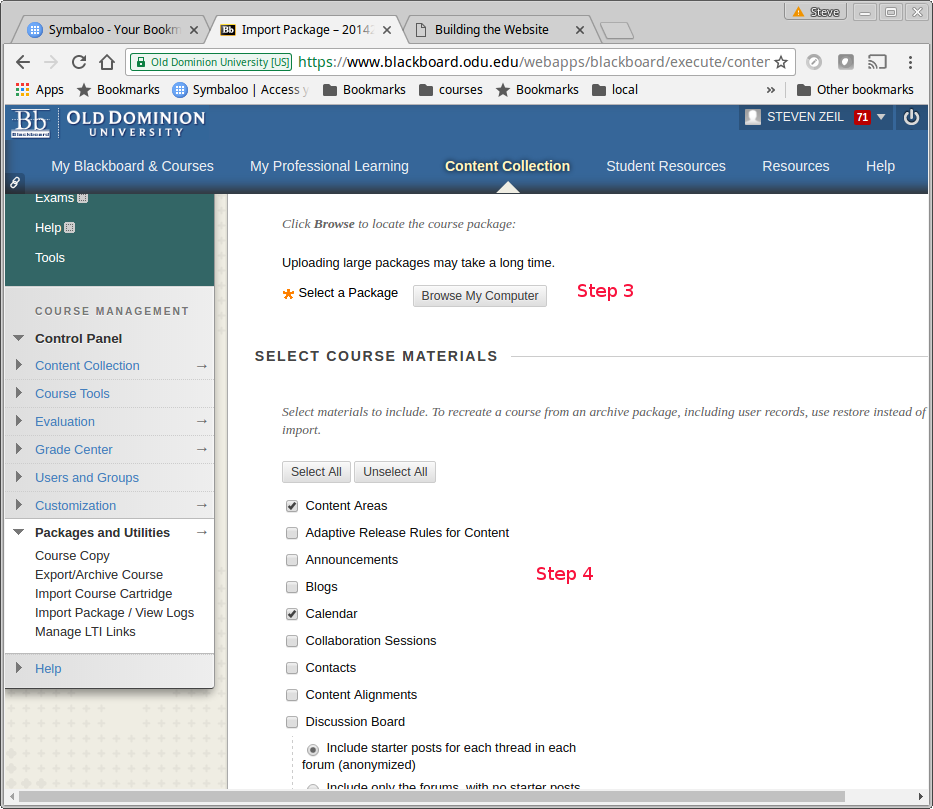
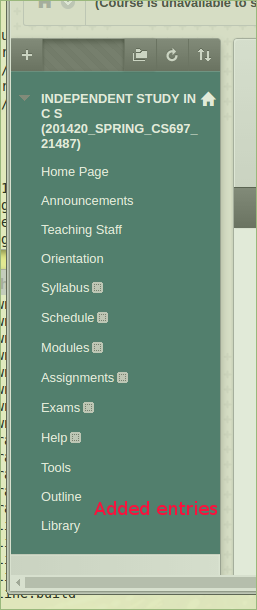

Building the Website
Steven Zeil
CoWeM uses Gradle to automate the process of building the website.
Gradle is a build manager for software projects. Although a websiote may not involvr programming in the usual sense, it can certainly be regarded as a software system. If ypur only experience with with build managers has been the ones built in to a programming IDE or the venerable Unix make utility, you may be surprised at the range of features provided by Gradle. Of particular relevance to CoWeM:
-
Gradle allows the steps involved in a build, such as copying and and manipulation of files, to be described and performed in in a portable (not dependent on a specific operating system) manner.
-
Gradle can fetch and incorporate software packages needed for the build from over the internet, and can check periodically for updates to those packages.
-
The ability to fetch needed software packages extends to Gradle itself, so by including a few small files in each copy of a CoWeM course, the Gradle build system can be bootstrapped on to any Linux, Windows, or OS/X machine with a reasonably up-to-date Java environment (JRE).
-
Gradle can be extended, teaching it new processes for different kinds of projects, via a plugin system.
- CoWeM is, in fact, implemented as a package of related Gradle plugins.
1 Running Gradle
The files gradlew , gradlew.bat, and gradlew-gui.bat are scripts that are used to launch the gradle build manager to request building the website. The .bat files are for Windows. The simple gradlew file is used for both Linux and OS/X.
The first time that you run one of these on a given machine, it will download the actual Gradle build manager and install it in your personal account area (Look for a .gradle directory in your user home directory.) It will then proceed to download the latest version of CoWeM and of the various software libraries used by CoWeM. This software is stored in a cache (within the afore-mentioned .gradledirectory). Items in the cache expire periodically (typically after 24 hours), so that Gradle will check at intervals to see if any of that software has been updated.
Gradle can be run in a command-line mode or a GUI mode.
1.1 Windows
To run in command-line mode, open a cmd window, cd to your course root directory, and run
gradlew target
The possible targets are discussed in the next section.
To run in GUI mode, do the same and run
gradlew-gui
or simply view the course root root directory in the Windows File Explorer and double-click the gradle-gui.bat file.
1.2 Linux
To run in command-line mode, open a terminal window, cd to your course root directory, and run
./gradlew target
The possible targets are discussed in the next section.
To run in GUI mode, do the same and run
./gradlew --gui &
1.3 The GUI Mode
In GUI mode, Gradle displays a list of possible build targets (in the top panel), which will include those discussed in the next section plus a variety of “generic” Gradle targets.
You can click on any of them to select it, then click the small green “run” button at the top of the upper panel to execute that target.
2 The Gradle Build Targets
The following are the targets that can be supplied to Gradle at the command line or selected from the GUI.
2.1 Building the Website
- build
- Build the website by processing the document sets. The resulting website can be found in the directory
build/website(under the course root directory). You can use your favorite web browser “Open File” command to view any of the HTML files that have been generated.
The build target is the default. If you don’t specify a target at the command line, build is run.
- Build the website by processing the document sets. If the
Directory/outlinedocument exists and has been generated in scroll format, it and all primary documents linked from it (that also have scroll formats) are combined into a single document and used to produce PDF summaries of the website suitable, with some limitations, for reading off-line.PDFs can be generated in a variety of page sizes. By default, generated PDFs are
- A letter page (8.5 in by 11in) version
- A 4x3 page format for larger tablets.
- An 8x5 page format for tables designed for viewing “wide-screen” video.
The generated PDFs are placed in the root directory of the website.
PDF generation is only avilable on machines with the
npmprogram for retrieving Javascrip modules. - clean
- Delete all files that can be reconstructed via the
buildtarget. This is done by deleting the entirebuilddirectory.As noted earlier, you can “clean” a project by simply deleting the
builddirectory via normal operating system commands.
2.2 Deploying the Website
“Deploying” a website means to copy it onto the server where it will be hosted. Three options are supported for this. The relevant targets are:
- deploy
- Synchronize the
build/websitewith a directory specified in the course configuration (build.gradle) asdeployDestination.This works only if the destination directory is on the same local file system as the machine on which you are working.
- deployBySsh
- Deploy the
build/websiteto a directory on a remote machine configuration (build.gradle) assshDeployURL.- You may optionally also specify an SSH key for access to that remote machine as
sshDeployKey. - If no such key is used, this use any ssh key agent you might have running to authenticate on the remote machine.
- There is currently no option for supplying a simple password. (Coming?)
- Currently this deployment is done by packing the entire website into a Zip file archive, sending that file to the remote directory, and remotely issuing an
unzipcommand there.If the website is large and only a few files have been changed, this can be quite slow.
- You may optionally also specify an SSH key for access to that remote machine as
- deployByRsync
- Synchronize the
build/websitewith a directory on a remote machine configuration (build.gradle) asrsyncDeployURLusing thersyncprotocol.- This can only be done if the machine on which you are running has the
rsynccommand installed. - You may optionally also specify an SSH key for access to that remote machine as
rsyncDeployKey. - If no such key is used, this will still take advantage of any ssh key agent you might have running.
- The
rsyncprotocol will only transfer files that have been changed since the last deployment. For large files in which only small portions have changed,rsyncwill try to transfer only the changed portions. This makesrsyncideal for updating websites after only a few things have been changed.
- This can only be done if the machine on which you are running has the
All deployment commands will do a build first, if necessary.
2.3 Packaging the Website
Packaging refers to packing up the entire website into a single file that can later be uploaded to a particular server. All packages are deposited in the build/packages directory.
CoWeM cab build both “fat” and “thin” packages. A fat package contains the entire website. A thin package contains navigation items that link back to a deployed version of the full website elsewhere.
Build options are:
- zip
- Package the website as a Zip archive.
This can be unpacked in any directory managed by a web server to make the course content available. This includes a Blackboard content collection.
- bb
- Deprecated in favor of
scorm(see below).Package the website as a fat Blackboard module that can be imported into a Blackboard course. Content included is
- The entire website is exported to the Blackboard course Content Area.
- All links from the
Directory/navigationdocument set are added to the navigation panel of the Blackboard course. - All dates found in items in the course outline (
Directory/outline) are added to the Blackboard calendar.
Brief instructions on importing Blackboard packages is given below.
- bbthin
- Package the website as a Blackboard module that can be imported into a Blackboard course. Content included is
- All links from the
Directory/navigationdocument set are added to the navigation panel of the Blackboard course. These are resolved to absolute URLs to a deployed version of the course website whose root directory is located at thebaseURL. - All dates found in items in the course outline (
Directory/outline) are added to the Blackboard calendar.
Brief instructions on importing Blackboard packages is given below.
- All links from the
- scorm
- Package the website as a SCORM 1.2 package that can be imported into Blackboard or most other Learning Management Systems.
Brief instructions on importing a SCORM package into Blackboard is given below.
The SCORM format does not include calendar updates in Blackboard, but calendar entries can be generated and imported as a
bbthintarget.
2.4 Building a Specific Document Set Directory
If you are working intensively on a single document or document set, you can instruct CoWeM to build or deploy only that one document set, saving some time.
There are several ways to do this:
-
If working in the Gradle GUI, you will see your CoWem groups as expandable items in the list of targets. Expanding one of those groups will give you a list of the document sets in that group. Expand one of those document sets and you can select a target to be applied to that document set.
-
Working at the command line, if you
cdinto the document set directory, you can specify the build targets just as you would at the top. The one caution is that you must invokegradlewvia the path back to the document root. For example, to rebuild a course syllabus, you might docd Public/syllabus ../../gradlew build
in Linux or OS/X. In Windows, you would do the same excpet using “" instead of ”/".
- Working at the command line, but
cd’d into the course root directory, you can specify a target on a specific document set using the format:_group_:_documentset_:_target_. For example, to rebuild a course syllabus you could say./gradlew :Public:syllabus:build
The targets that can be launched for a single document set are:
- build
- Same as the yop-level
buildtarget, but builds only the indicated document set. - deployDoc
- Like the top-level
deploy, this builds the document set and copies it to the appropriate deployment directory on the same machine. - deployDocBySsh
- Like the top-level
deployBySsh, this builds the document set and copies it to a remote machine via secure shell. - deployDocByRsync
- Like the top-level
deployByRsync, this builds the document set and copies it to a remote machine via anrsynccommand.
3 Importing CoWeM Packages into Blackboard
3.1 Importing a Zip Package
- Create a zip package using the zip build target, as described above.
- Go to your course on Blackboard, and enter a content collection area, either the course content area (visible only to students in that course) or your user content area (potentially visible to everyone on Blackboard).
- Use the Blackboard controls to enter the folder where you want to put the course materials, or to create a new folder to hold them.
-  In the
Uploadmenu, select “Upload Zip Package”. - Click the “Choose file” button, and select the Zip package you created in step 1. You’ll find it in your course’s
build/packages/directory. - Click “Submit”.
The Zip package will be uploaded, and after it has been uploaded, Blackboard will unpack it into the Content Collection folder you had selected.
Using the Blackboard controls, you can navigate to any items you like (e.g., the course outline), then copy the URL from your web browser’s address bar and paste it into a document available to your students.
You can also add any item uploaded this way into your Blackboard course’s navigation bar by clicking the “+” at the upper left of the navigation bar and selecting Course Link.
3.2 Importing a SCORM package
-
Use the scorm build target, as described above, to produce a package stored in
build/packages/scorm….zip -
Enter your Blackboard course. Select (or create) a content area, such as the “Outline” area, and enter that area.
-
from the “
BuildContent” menu, select “Content package (SCORM)” and follow the instructions to upload your newly generatedscorm….zipfile. -
There is no “grading” associated with these packages. So choose the following settings:
- Make SCORM Availabble; yes
- Number of Attempts: Allow unlimited attempts
- Track Number of Views: whatever you like
- Grade SCORM: No Grading
- Grade SCOS: No
3.3 Importing a bb or bbthin Package
Important: When you use the Blackboard “import package” procedure, content is added to your Blackboard course but never replaces existing content. You can not update existing imported materials.
It’s important, therefore, that whenever you import material for the second (or third or …) time, you delete the old versions first. Otherwise you are likely to wind up with really ugly calendars and navigation bars and your content collection area will get increasingly large and confusing.
- Create a bb or bbthin package using the corresponding build target, as described above.
-  Go to your course on Blackboard, select “
Import Package” underPackages and Utilities, then select “Import Package”. -  Click the “Browse My Computer” button and select the bb or bbthin package you created in step 1. You’ll find it in your course’s
build/packages/directory. - In the
Select Course Materialsarea, choose the items you want to import:-
Select
Calendarif you want to add calendar entries from your course outline to the Blackboard calendar for your course. Leave this unselected if you have no dates in your outline, or if you have already imported calendar entries and have no need to change them, or if oyu have not yet finalized your dates and want to wait a little while.(Deleting calendar entries in Blackboard is particularly tedious, so I generally do this only when I am pretty sure I have nailed down all of my important dates.)
-
Select
Content AreasandNavigation Settingsto update course content (bbpackages) and the Blackboard navigation bar (bothbbandbbthin). Entries from your CoWeM navigation document will be added to the main Blackboard course navigation bar. For a fatbbpackage, these entries will point to the copy of the website uploaded into the course Content Collection area. For thebbthinpackage, these entries will point to the “real” external website indicated by your course’sbaseURLparameter.
-
-
Click “Submit”. Blackboard will upload the package you specified and will queue up a background job to process it.
Processing typically takes several minutes, but can take quite a long time if you have a very large website or if many other people have background jobs queued. (For example, requests to copy materials from one Blackboard course to another are also handled as background jobs, and are quite common in the weeks leading up to a new semester.)
-
After the import has completed, you may want to rearrange the new navigation bar entries. (New entries are always added to the bottom of the bar.)